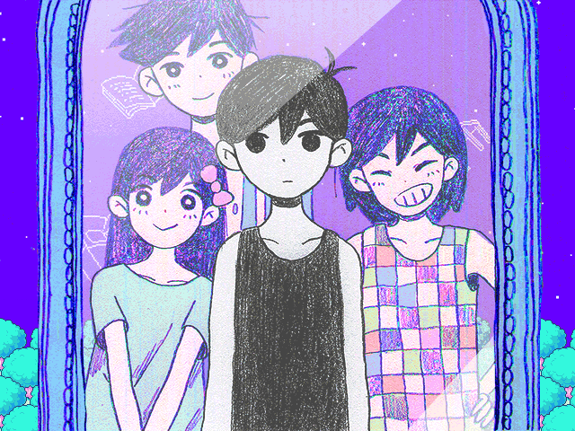
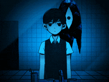
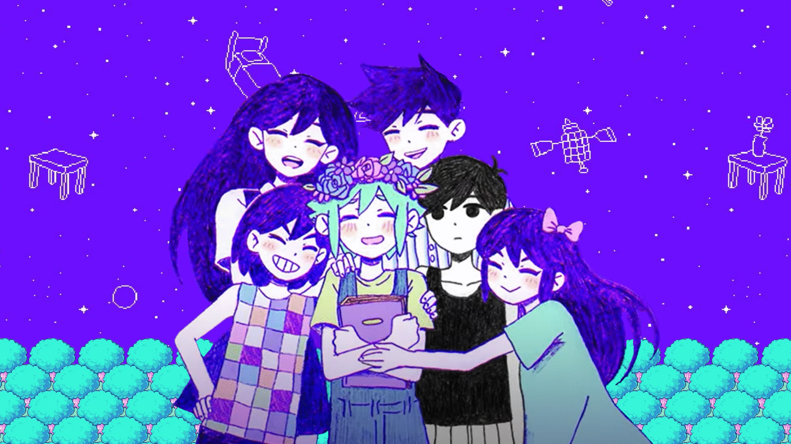

About Sunny
Discover who Sunny is, his background, and key character traits that define his journey.
Explore more

Lore & Timeline
Follow Sunny's story chronologically through major plot points and events.
Explore Timeline

Psycological analysis
Delve into Sunny's psyche, trauma, and the themes that shape his character.
Analyze Character

Art Gallary
Experience the visual representation of Sunny and the OMORI atmosphere.
Veiw Gallary